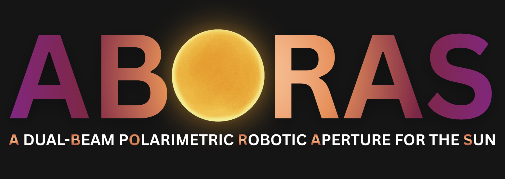
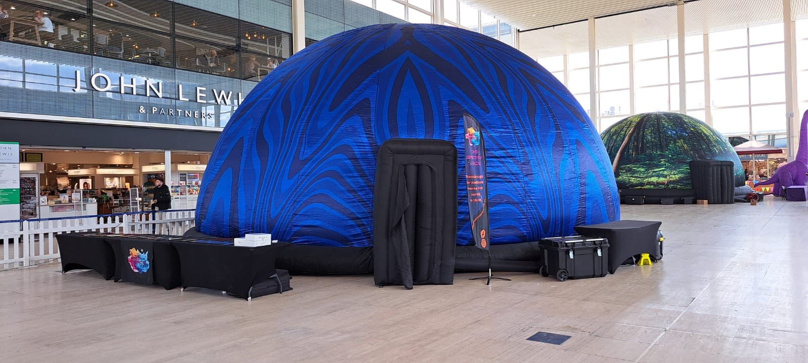

About
Hey, I'm Kiran and I am currently a PhD student at the University of Birmingham. I run a lot, play cricket, love football, and make the saxophone sound like a kazoo.
PhD student
September 2025 - Present
Sun, stars, and exoplanets group, University of Birmingham
- Developing the pipeline for processing ABORAS polarimetric data.
- Characterising the impact of stellar activity on radial velocity measurements using Sun-as-a-star observations.
- Contributing to the commissioning and science verification of the ABORAS instrument.
Planetarium Presenter
September 2024 - June 2025
Immersive Experiences Planetarium Domes Ltd
- Delivered engaging astronomy presentations to audiences of all ages and backgrounds.
- Operated and maintained planetarium equipment, ensuring high-quality visual and audio experiences.
- Adapted presentations to suit different audience needs, from young children to adults.
Support Astronomer
January 2023 - September 2023
Isaac Newton Group of Telescopes, La Palma
- Trained visiting astronomers to operate the 2.5-m Isaac Newton Telescope and its instruments.
- Conducted service observations, ensuring data quality and adherence to observing protocols.
- Provided technical support and troubleshooting for telescope and instrument issues.
About me
Overview
In September 2025, I began my PhD at the University of Birmingham where I am working on ABORAS (A dual-Beam pOlarimetric Robotic Aperture for the Sun). This will serve as a dedicated Solar input for the HARPS3 instrument which will be installed on the 2.5-m Isaac Newton Telescope in La Palma. ABORAS will help to improve our understanding of stellar variability, track the long-term stability of HARPS3, and serve as a benchmark for the detection of Earth-sized exoplanets around sunlike stars.
I graduated from the University of Sheffield with a Master's degree in Physics and Astronomy in July 2024. In 2023, I worked as a support astronomer at the Isaac Newton Group of Telescopes (ING) in La Palma. From 2024 - 25 I worked as a planetarium presenter for Immersive Experiences, where I travelled across the UK delivering a variety of presentations to a diverse range of audiences.
Undergraduate work
In my third and fourth years, my researched focused mainly on a type of interacting binary star called cataclysmic variables (CVs). My third year research involved taking photometric observations of the CV V1315 Aquilae with the 0.5-m pt5m telescope in La Palma. The lightcurve of V1315 Aquilae was analysed to determine the inclination and radius of the accretion disc which surrounds the primary white dwarf star. I also worked on a detector aimed at measuring miniscule tremors with frequencies associated with Parkinson's disease.
After the third year, I spent a year working as a support astronomer for the ING at the Observatorio de Roque de los Muchachos in La Palma. In this role, I was responsible for training visiting observers to use the 2.5-m Isaac Newton Telescope, as well as performing service observations and setting up its two instruments. Towards the end of my time at the ING I performed my own observations with the Isaac Newton Telescope, which I worked on in my fourth year for my masters project.

My fourth year research project involved using spectroscopic data of a CV to determine the masses of its component stars. These mass measurements were then used to test the predictions of the standard evolutionary model of CVs.